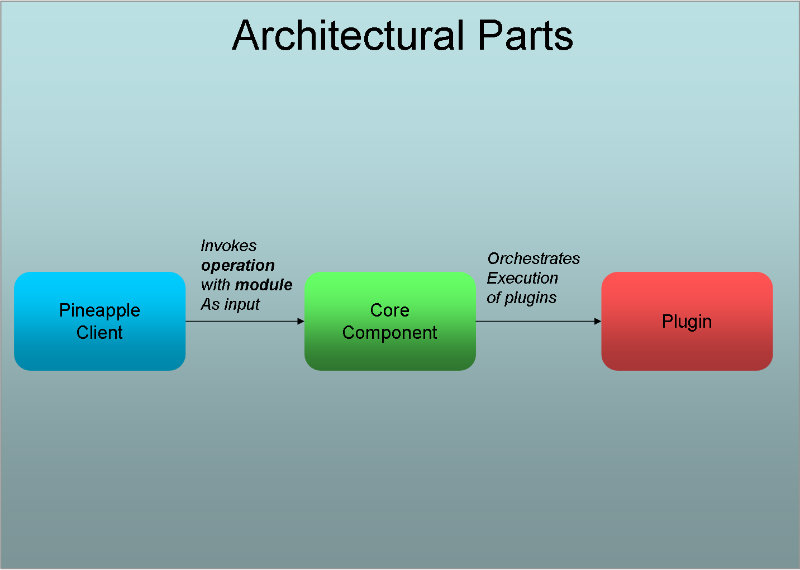
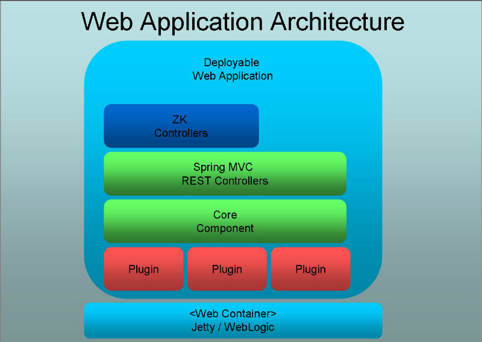

Architecture description
The architecture description contains these topics:
- Main components
- Pineapple clients
- Core component
- Providing clients with dynamic updates about the execution of an operation
- Extension points
- Plugin framework
- Execution framework
- REST API
- Agent architecture.
Main components
The architecture consists of three types of components:
- Pinapple clients - a client component provides a user interface and invokes the core component.
- Pinapple core component - The core component implements functionality to orchestrate execution of operations on resources.
- Pinapple plugins - Each plugin provides access to an manageable resource.
Pineapple clients
The purpose of a client is to provide a user interface and to invoke the core component to execute operations.
There are multiple types of available clients as shown by this illustration:
For more information about the available clients, please consult the Pineapple clients overview.
Core component
The core component is the entry point into Pineapple. The core component is used by creating an instance and then invoking operations which triggers the execution of zero or more plugins.
The core component supports three use cases:
- Initialization of the component. The initialization takes place when a client creates a new instance of the core component and it readies it self for execution by loading all required configuration data.
- Execution operation. The execution takes place when the component is invoked by a client to execution an operation.
- Register result listener. The registration takes place when a client whishes to register itself to receive dynamic updates about the execution of an operation.
For information about the usage of the core component from clients, please consult the Core component usage documentation.
For information about implementation of the supported use cases in the core component:
Providing clients with dynamic updates about the execution of an operation
To provide clients with dynamic updates about how the execution of an operation proceeds, the core component implements the publish subscribe pattern which allows clients to register themselves to receive updates about the execution of an operation.
The pattern is implemented through the usage of an result listerner which has the role of subscriber. The listener is implemented by a client and registered with the core component. the core component has the role of publisher and will publish events during execution to all registered subscribers.
The events is implemented using the execution framework in the form of execution results. Each execution result documents how a particular part of the execution of an operation proceeds.
For detailed information about implementation of the execution framework, please consult the Execution framework reference
For information about registration of a result listener, please consult the implementation documentation for Register result listener.
Extension points
The architecture defines two extension point where the functionality can be modified (besides plugins):
- Credential provider
- Result listeners
Plugin framework
Pineapple defines a small framework for implementation of new plugins. The purpose of the framework is make it easy to extend Pineapple with new functionality. A plugin extends Pineapple by providing access to one or more new resource types.
For detailed information about implementation of plugins, please consult the Plugin framework Reference.
Execution framework
Pineapple defines an framework for monitoring and controlling the execution of operations.
The framework is very central to the architecture of Pineapple since all parts of project depends on it, including the clients, the core component and the plugins through the plugin framework. The purpose of the framework is:
- Control the execution of operations.
- Gather runtime information about the execution of operations and commands.
- Deliver the runtime information to clients in real time.
For detailed information about implementation of the execution framework, please consult the Execution framework reference
REST API
The web application implements a REST API which enable remote or headless usage of Pineapple.
The GUI layer in the web application implement using the ZK framework uses the services defined in the REST API to invoke operations on the core component.
The REST API is used in the agent architecture to enable the communication on the agent side of things.
The services in the REST API uses the core component administration API to access the core component. The REST API is implemented using Spring Web MVC.
Agent architecture
The agent architecture supports the usage of Pineapple in a distributed setting. It's done through the usage of the Pineapple binary in two different roles as either master or agent.
In the role as master, a Pineapple instance is used to start and orchestrate the execution of operations on any number of agents. In the role as agent, a Pineapple instance executes operations on behalf of the master and reports back the results.
The two main components in the agent architecture are the agent plugin and the REST API which enables the communication between the master and agents. The agent plugin implements the master side of the agent architecture, where the plugin implements the functionality to start remote operations, communicate with agents and collect the results. The REST API implements the agent side of the agent architecture, where it is capable of receiving requests from the master, execute the request and report the results.
Through the distribution and operation of agents the functionality of all plugins can be used in a distributed setting.
It is recommend to use the standalone web client as a basis for agents. It is easier to distribute and configure because it comes with its own embedded web server.
The two main components in the agent architecture are the agent plugin and the REST API which enables the communication between the master and agents. The agent plugin implements the master side of the agent architecture, where the plugin implements the functionality to start remote operations, communicate with agents and collect the results. The REST API implements the agent side of the agent architecture, where it is capable of receiving requests from the master, execute the request and report the results.